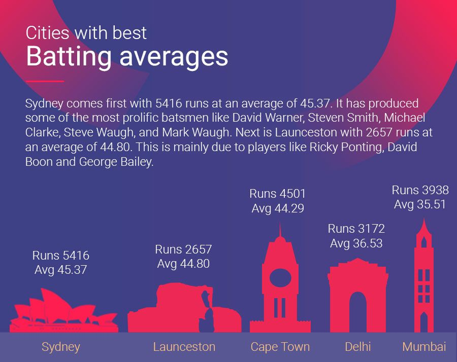

Howdy,
In my research area, autonomous vehicles, I found an inmportant thing is to visualize data. I want to learn some approaches of data visualization, so I could use it in my research project.
My recent research project is focus on visualize and simulate the autonomous vehicles and its environment. In this context, we used a simulation tool for traffic simulation, called SUMO. It is able to process road, traffic and vehicles data into visualization. Thus, I think it is a good example of data visualization.
It is illustrated in this link:
Import real road data into SUMO
This is a good example, because it automates the process of processing data into simulation tool. It can import the real-road data into a graphic visualization, then it could automatically add some cars in it to simulate traffics.
Many bad or under-developed data visualizations I have seen. Here is one example:
 Link of bad example: Cities with best Batting averagesThe reason is that the graphs in it does not tell anything about data. It has graphs of cities, but it did not really show the numbers to help visualize the data in it. Hence, I believe that it is a bad example of data visualization.